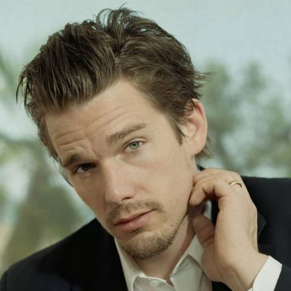
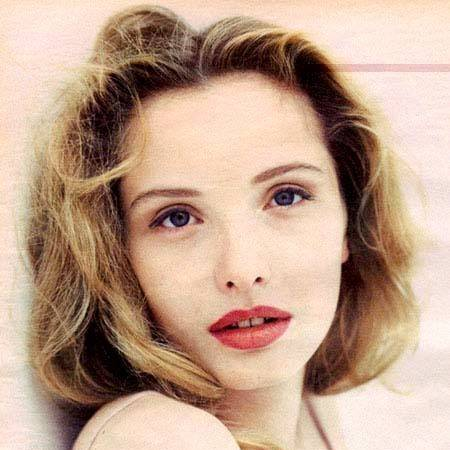
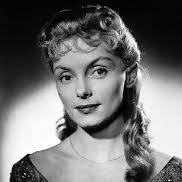
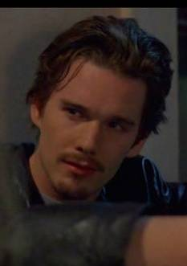

基本信息
《爱在黎明破晓前》是由理查德·林克莱特执导，伊桑·霍克、朱莉·德尔佩主演的爱情片。该片于1995年1月27日在美国上映。 该片讲述了美国青年杰西在火车上偶遇了法国女学生塞琳娜，两人交谈甚欢。他们游览城市并谈论着彼此的过去 。最终，他们相约在半年后再见。
剧情简介
杰西 （伊桑·霍克饰）由于囊中羞涩， 决定在维也纳下车漫游， 度过他在欧洲的最后一夜， 第二天一早搭飞机回美国；塞利娜 （朱莉·德尔佩饰）患有飞机恐惧症， 在布达佩斯探望完外婆后， 选择搭乘火车返回巴黎。 两个素昧平生的游客在车厢中相遇 ， 他们在交谈中发现， 彼此间竟然有那么多话题， 于是他们一路上愉快地畅谈， 直到火车停在了维也纳。 杰西对塞利娜依依不舍， 建议他们一起下车到维也纳逛一整夜， 塞利娜居然同意了。 从午后至黄昏， 由夜晚到天明， 两人的足迹踏遍了维也纳的每一个角落。 他们轻松自然地聊着生活中的琐事， 交换着彼此对事物的看法， 爱情开始弥漫在维也纳的街头， 弥漫在暧昧的夜色中， 弥漫在优美的音乐之中， 弥漫在他们的眼波流转中， 弥漫在摩天轮上忘情的接吻中， 也同样弥漫在他们的字字珠玑中。在日出来临之前的 14个小时里， 两颗心相互吸引感动， 于是约定半年后在维也纳再见 [3] 。
演职员表
- 
- 
- 
角色介绍
-

- 伊桑·霍克 饰 杰西
- 杰西是美国青年，他在开往巴黎的火车上遇到了塞利娜，他原本要去维也纳转机飞回美国，但是当列车到达维也纳的时候，杰西说服塞利娜和他一起下车去。因为无钱在旅馆里过夜，所以两个人在维也纳城里游览。在他们多次谈话之中，两个人燃起了爱的火花。
-
- 朱莉·德尔佩 饰 塞利娜
- 塞利娜是法国学生，原本她打算去布达佩斯探望祖母后返回巴黎的大学，但是她和杰西一起游览了维也纳城，这期间，二人交换彼此对生活和爱情的想法，在日落时分，他们第一次拥抱、接吻。两个人分别之时，约定半年之后在离别的车站重新相会。
获奖记录
| 颁奖典礼 | 奖项名称 | 获奖方 | 备注 |
|---|---|---|---|
| 1995年第45届柏林国际电影节 | 银熊奖最佳导演 | 理查德·林克莱特 | 获奖 |
| 1995年第45届柏林国际电影节 | 金熊奖 | 《爱在黎明破晓前》 | 提名 |
| 1995年第4届MTV电影奖 | 最佳吻戏 | 伊桑·霍克、朱莉·德尔佩 | 提名 |
影片评价
从相识到相知，恋爱中的各种小心思和小动作，都在影片中的到了细腻的呈现，让观众会心一笑之后又觉得温暖而窝心 。对于唠嗑这件事儿，《爱在黎明破晓前》是经典，两位主角从头唠到尾，看得出并非尬聊，而是趣味相投，电影在两位的唠嗑中经历分合，演绎人生 。（腾讯娱乐评）
该片中，好莱坞爱情电影的故事情节几乎全然不存在。相反，观众看到的是无拘无束的漫谈：关于父母亲、关于音乐、关于过去的男友或女友，以及死亡。他们甚至装扮不同角色假装打电话交谈。男女主人公之间显然存在性吸引，但这种性吸引通过缓慢、温馨的手法体现出来。这部电影的中心是男女之间的攀谈，而不是他们的性关系。但这样却更加浪漫。男女交谈与性交的对比，就好似衣着与赤裸人体的对比。前者富有无穷尽的变化、逗趣、伪装或个性表达；而后者不过是一锤子买卖 。（《好莱坞电影类型 历史、经典与叙事》评）